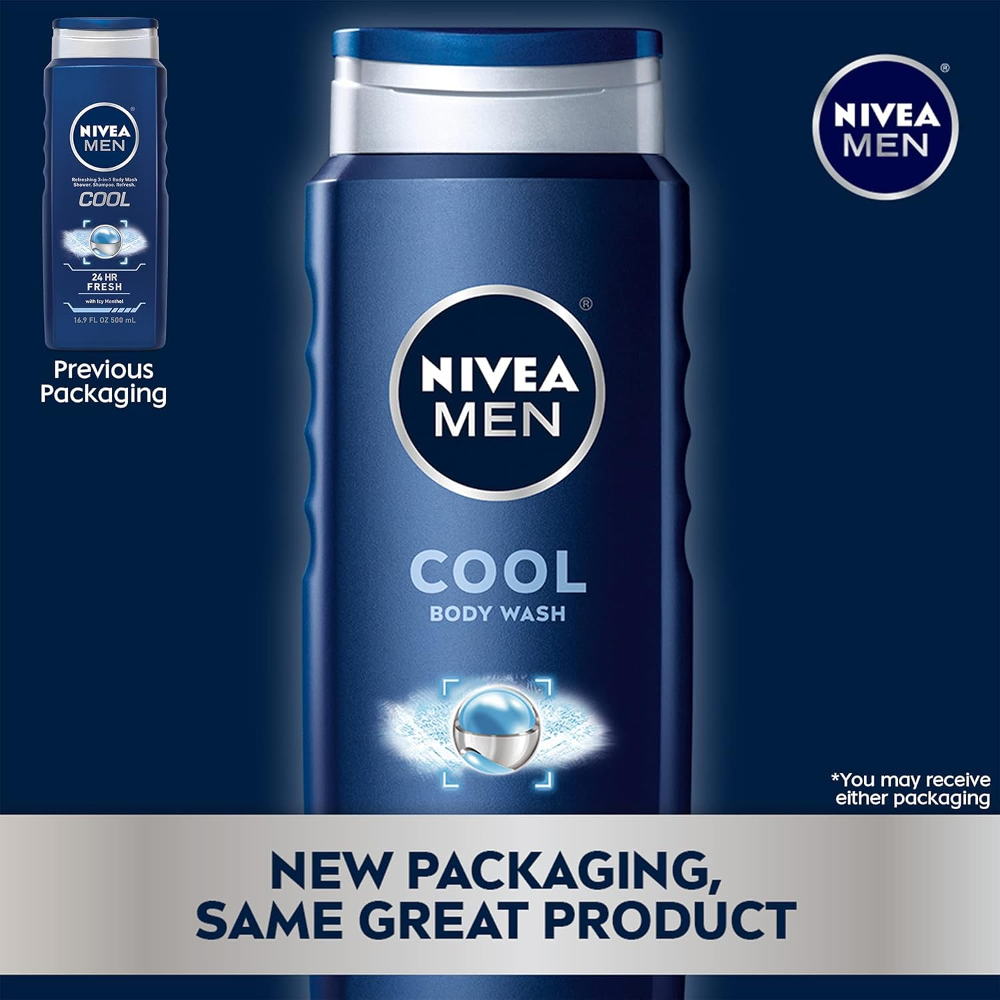
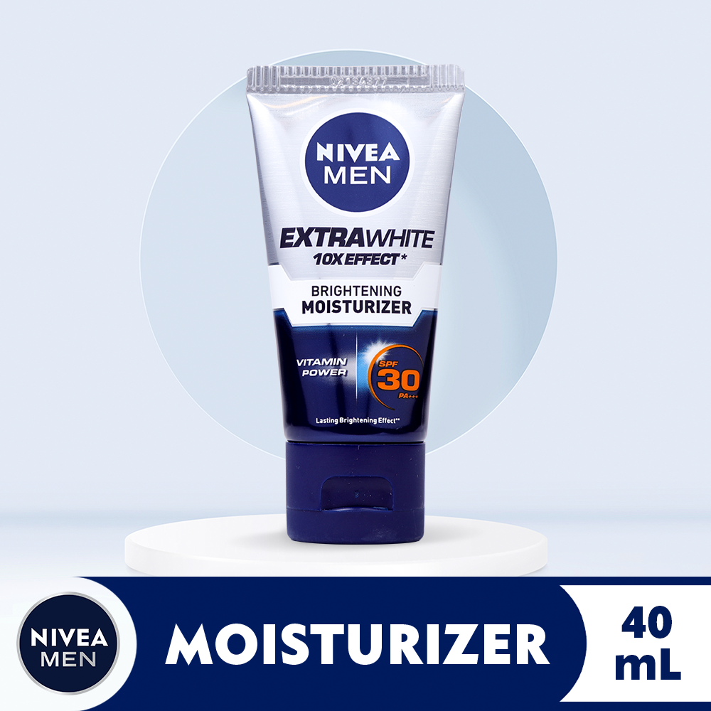
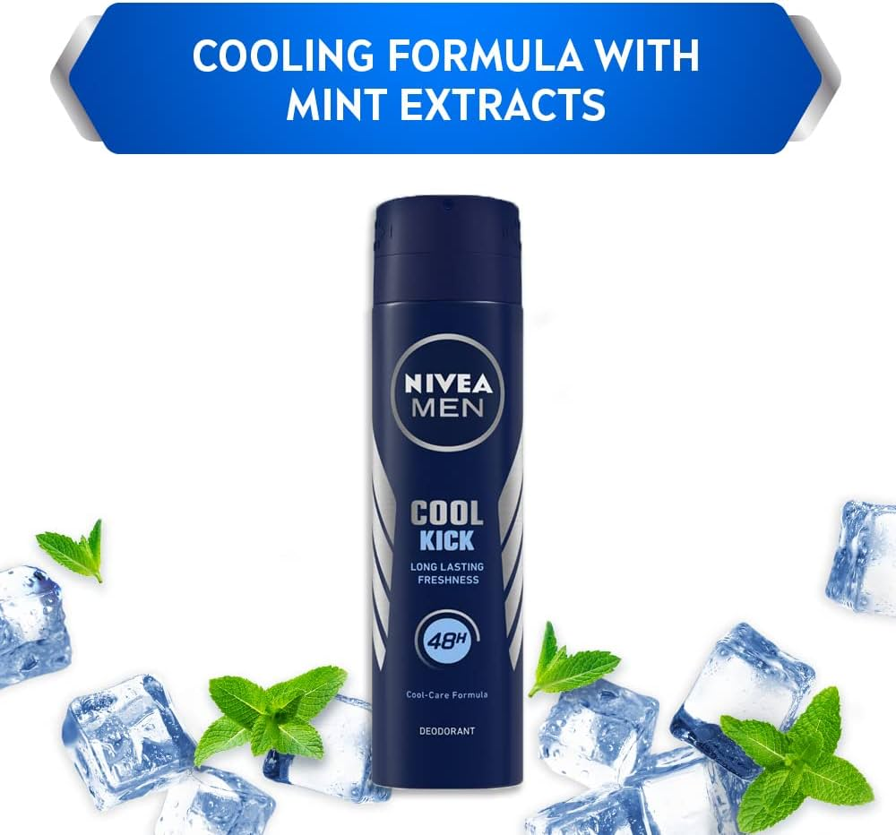

-Body Products-


Body Moisturizer
Nivea Men ₱290
Using a body lotion every day can help replenish lost moisture, and ensure your skin stays soft and supple. Heal rough spots, especially calluses - You might have rough areas on your body, like around the elbows or knees that could benefit from body lotion application after a bath or at bedtime.
